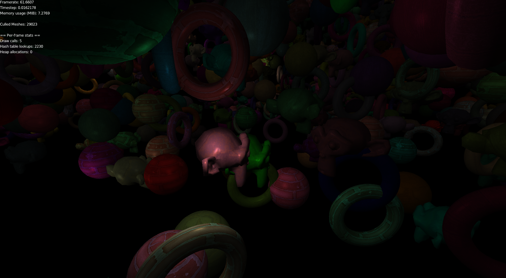
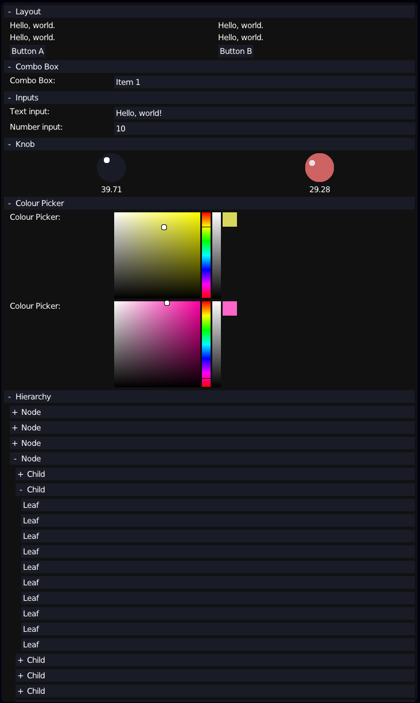
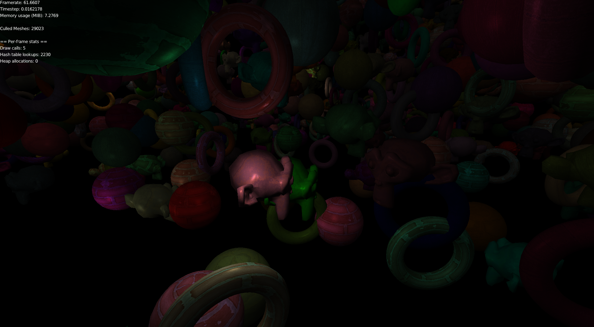
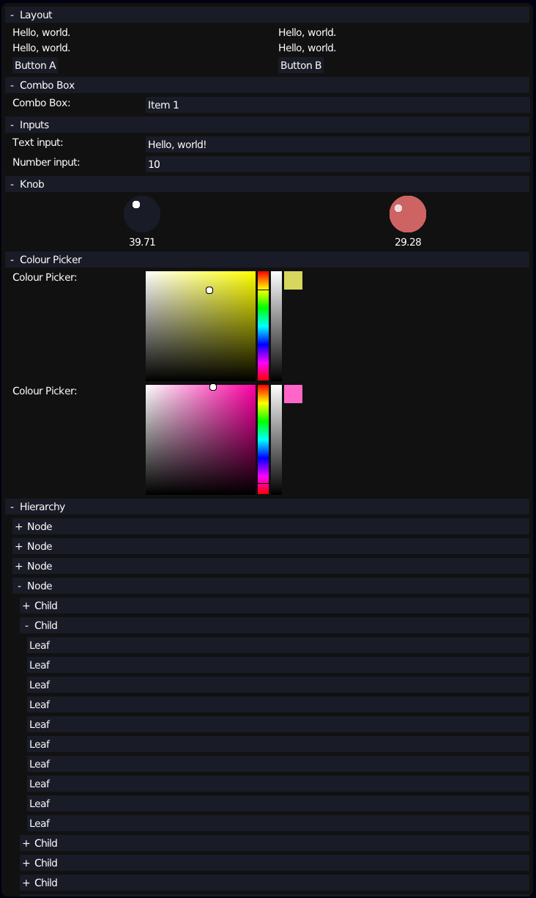

Corrosion
Corrosion is a graphics library with backends for OpenGL ES and Vulkan.
It has the following features:
- Backends for OpenGL ES and Vulkan 1.2. The Vulkan backend uses the new dynamic rendering features.
- Custom-made IMGUI, a spiritual successor to the one that I made for OpenMV.
- Generic data structures, including vector and hash table implementations that make heavy use
of macros.
- Generic and extendable resource manager with Quake PAK reader.
- Hand-made windowing and input for Windows and X11.
- Utilities for such things as frustum culling.
- API abstraction that wraps Vulkan pipelines and emulates them in OpenGL.
- Compute shaders (Vulkan only).
- Memory allocator that checks for memory leaks.
Links
Demo Screenshots
 


